Y62-F34-V1 · Candidate 04 · Geometry-Locked Neutralisation Review
master-draftowner-reference-derivedtransparent PNG1672×615REVIEW DECISION: RETURNEXACT-CHECKSUM OVERLAY PRECHECK PASSNOT CUSTOMER VISIBLE
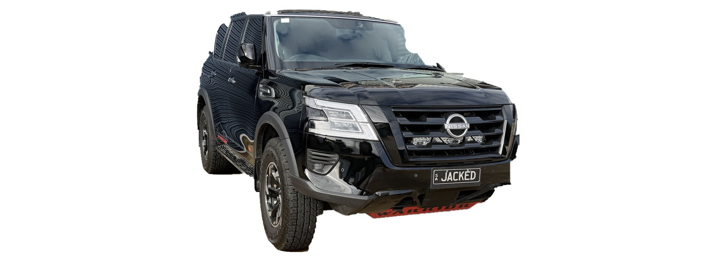
What advanced
Candidate 04 is the first RGB-neutralisation attempt produced under Y62-F34-V1-NEUTRAL-RECONSTRUCTION-01. It remains anchored to the owner's exact 2025 Series 5 Y62 Warrior reference chain. The Candidate 03 alpha mask is byte-identical, no resampling or perspective operation occurs, and every RGB change is confined to the checksum-pinned interior retouch envelope.
This is still review evidence, not a production master. The conservative envelope deliberately leaves locked photographic reflection/detail edges untouched, so clean-reconstruction approval is not claimed. Candidate 04 now has its own exact-checksum overlay evidence and reviewer packet. Machine geometry/transparency prechecks pass, but identified reviewer approval, clean-reconstruction disposition and production rights remain open.
Gate result
| Gate | State |
|---|---|
| Owner identity | Pass |
| 1672×615 + alpha | Pass |
| Alpha / silhouette | Byte-identical to Candidate 03 |
| Geometry / locked pixels | Pass · no coordinate transform |
| Retouch boundary | 38,419 changed pixels in envelope · 0 outside |
| Neutralisation proxy | HF RMS −17.76% · LAB chroma −10.78% |
| Clean neutral reconstruction | RETURN · source-scene reflection residue remains |
| Current-checksum overlay | Pass · 1101 matches / 1075 inliers · P95 0.655 px |
| Candidate 04 reviewer packet | Prepared · checksum pinned |
| Identified reviewer decision | RETURN · OPENAI-WF3-VISUAL-QA-01 · return-only authority |
| Direct/retouched production rights | Unrecorded |
| Customer production | Blocked |
Candidate 04 build evidence
The current candidate is checksum-pinned at bab5e059a6da3a4b7455777c9e23e593ed851fcedb709d44e10bbe54847b6bd1. The build changed 38,419 of the 38,943 eligible interior pixels with a mean absolute channel delta of 3.3683, P95 of 9 and maximum of 23. Alpha and all outside-envelope RGB bytes are unchanged.
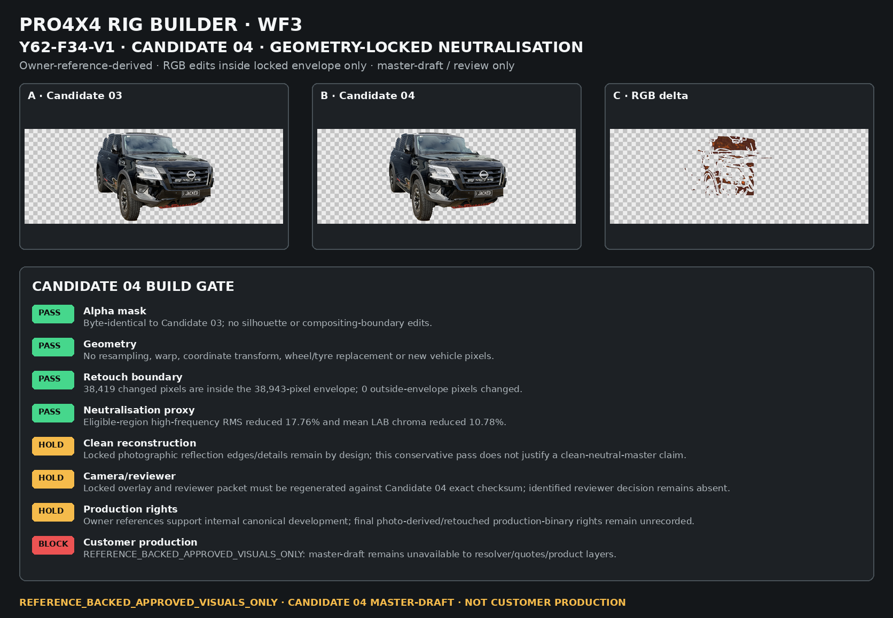
Why Candidate 04 is not promoted
The retouch contract protects silhouette, wheel/tyre geometry, fascia, lamps, grille, lower geometry and detected detail edges. That successfully prevents guessed geometry, but it also means some photographed reflections and source-scene detail remain locked. Candidate 04 therefore cannot honestly be called a clean reconstructed canonical master yet. Its exact checksum has regenerated locked overlay evidence and reviewer evidence, and Y62-F34-V1-REVIEW-DECISION-01 has now RETURNED the binary because strong photographed source-scene reflection bands remain. Production rights remain unrecorded and WF5 has not run the promotion gate. The customer resolver continues to see this F34 master as unavailable rather than falling back to draft imagery.
Candidate 04 exact-checksum overlay evidence · Y62-F34-V1-OVERLAY-EVIDENCE-02
This board is generated against Candidate 04 SHA-256 bab5e059a6da3a4b7455777c9e23e593ed851fcedb709d44e10bbe54847b6bd1 and primary owner reference OWNER-Y62-F34-01. Machine registration produced 1,101 good feature matches, 1,075 RANSAC inliers, a 97.64% inlier ratio and 0.655 px P95 residual. Alpha remains one connected vehicle component with no canvas-edge contact. This is evidence for reviewer inspection only; cameraGeometry.matched remains false.
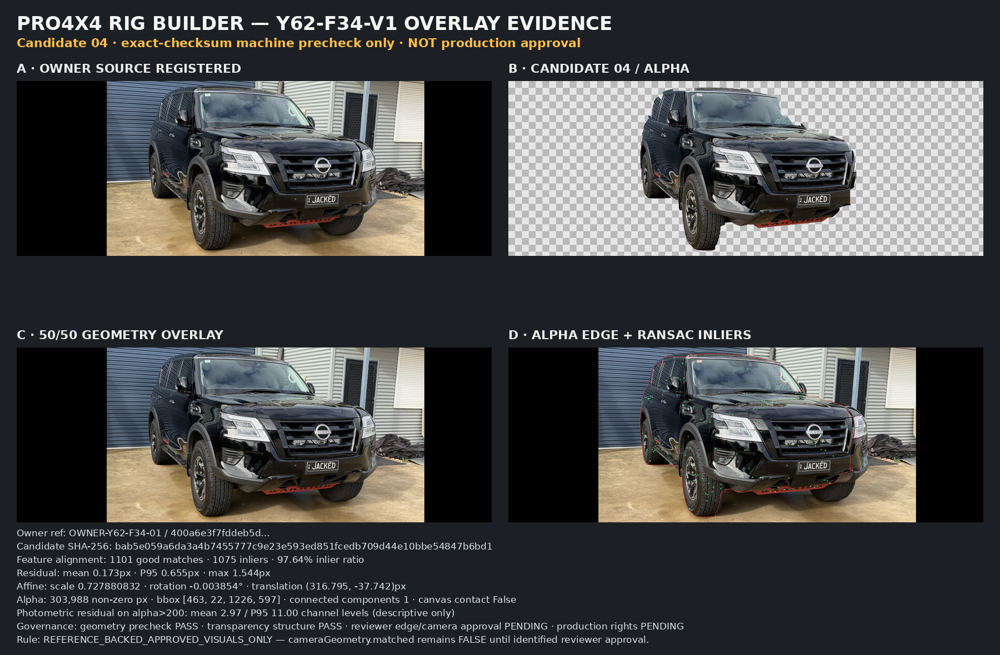
Candidate 04 reviewer packet · Y62-F34-V1-REVIEWER-SIGNOFF-02
The packet binds Candidate 04, the current overlay evidence and four owner-supplied Series 5 Warrior references into one immutable review set. Reviewer identity, timestamp and decision remain deliberately blank so the workflow cannot self-approve.
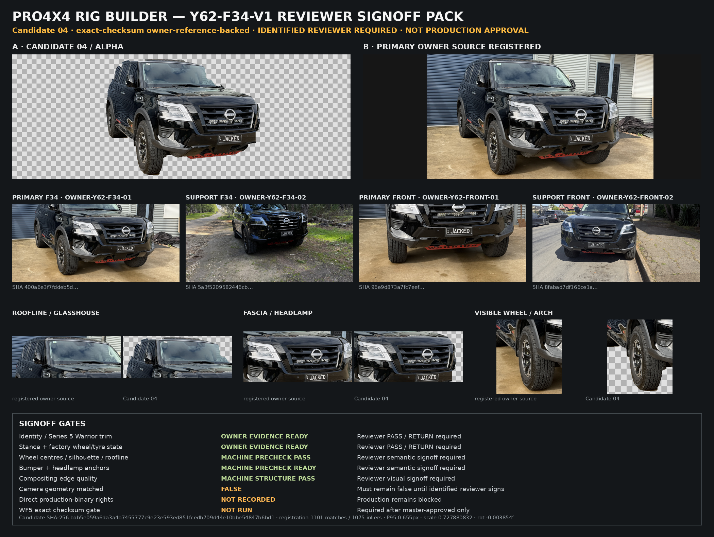
Neutral reconstruction contract · Y62-F34-V1-NEUTRAL-RECONSTRUCTION-01
Red areas are geometry/detail locks. Green areas are the only pixels Candidate 04 is permitted to change. The contract itself remains pinned to Candidate 03 as the immutable source boundary; Candidate 04 satisfies that boundary but does not gain approval from it.
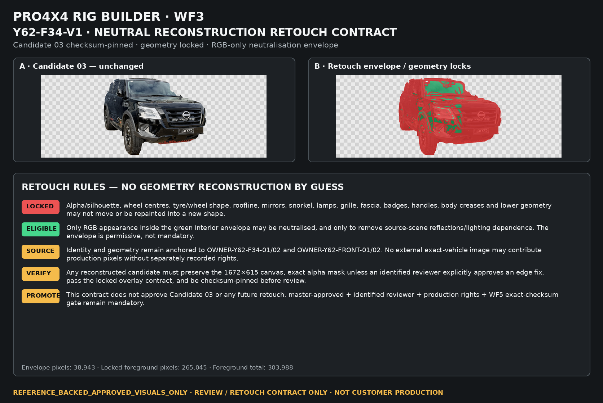
Historical Candidate 03 evidence
Candidate 03 remains the clean-alpha isolation source for this reconstruction family. Y62-F34-V1-OVERLAY-EVIDENCE-01 and Y62-F34-V1-REVIEWER-SIGNOFF-01 are retained as immutable Candidate 03 evidence only. They prove the prior geometry chain and reviewer packet structure, but they are explicitly stale for Candidate 04 because its RGB checksum changed.
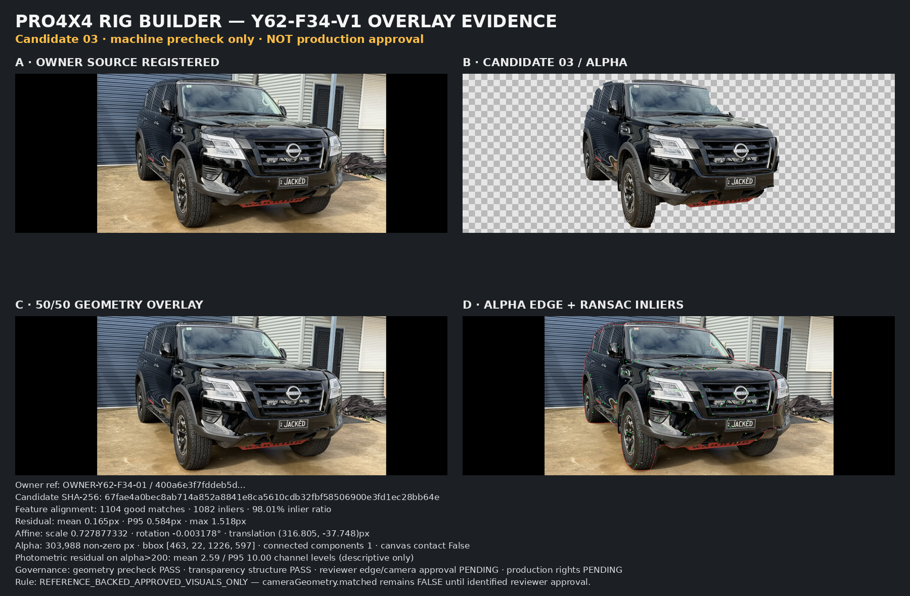
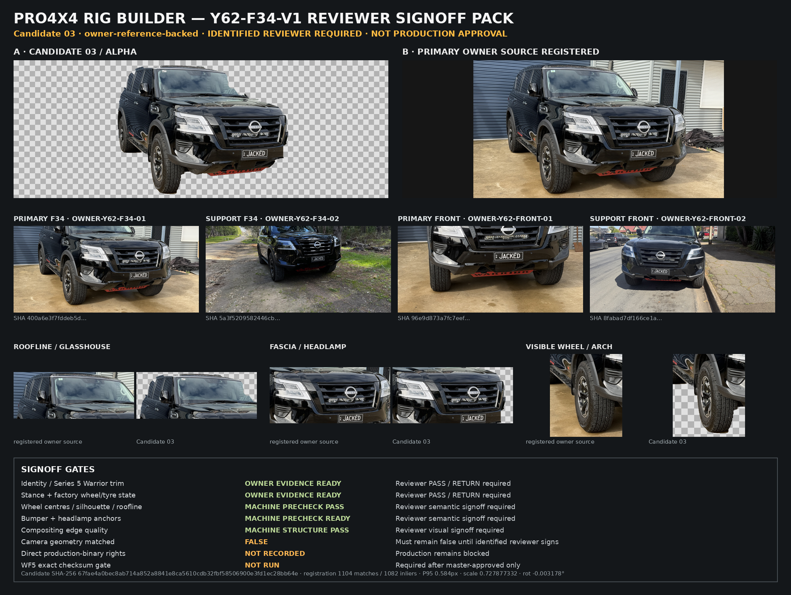
Primary owner references


Candidate history
Candidate 01 is the owner-source geometry board. Candidate 02 proved the initial transparency path and exposed scene contamination. Candidate 03 cleaned the alpha boundary and established locked geometry evidence. Candidate 04 performs conservative RGB-only neutralisation inside the locked envelope while preserving alpha and geometry. None is production eligible.
Candidate 04 review decision gate · Y62-F34-V1-REVIEW-DECISION-GATE-01
This immutable addendum closes two checklist gaps before human signoff: factory Warrior wheels/tyres are a separate semantic verdict, and the remaining photographed reflection/detail residue must receive an explicit clean-reconstruction PASS or RETURN. The gate cannot promote the master and remains staff-only.
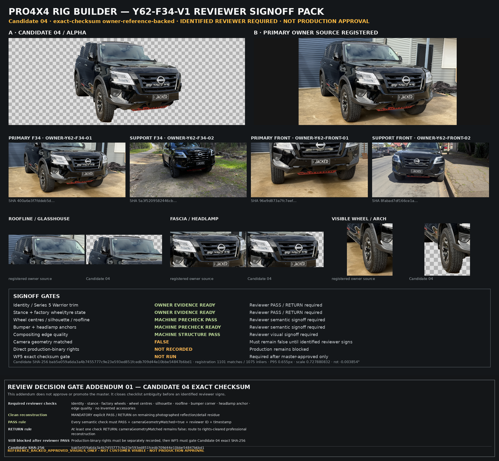
Review decision · Y62-F34-V1-REVIEW-DECISION-01 · RETURN
Reviewer: OPENAI-WF3-VISUAL-QA-01 · automated visual QA · return-only authority.
Candidate 04 is returned on clean-reconstruction. The owner-source roller-door/corrugated-building reflection pattern remains materially visible across the side glass/bodywork, with additional photographed environment reflections on the windscreen and bonnet. The reviewer class is not authorised to issue a PASS or master approval.
Identity, stance, factory wheels, wheel centres, silhouette, roofline, bumper corner, headlamp anchor, transparency edge structure and no-invented-accessories checks remain useful reference-backed evidence. cameraGeometryMatched stays false because the binary has been returned and must be re-reviewed after reconstruction.
Professional reconstruction handoff · Y62-F34-V1-PRO-RECON-HANDOFF-01
The returned Candidate 04 has now been converted into a checksum-pinned owner-only production-retoucher handoff. It contains the four owner-supplied authenticity references, the exact Candidate 04 source binary, locked geometry/retouch evidence, the return gate, a reserved Y62-F34-V1-CANDIDATE-05 output slot, explicit prohibited operations, provenance requirements and a no-auto-promotion acceptance contract.
No Candidate 05 binary has been received. Production rights remain pending. This handoff is staff/production evidence only and does not alter customer render availability.
R34 review decision · Y62-R34-V1-REVIEW-DECISION-01 · ACCEPT CAMERA FOR RECONSTRUCTION
Reviewer: OPENAI-WF3-VISUAL-REVIEW-01 · model-vision semantic review · camera-for-reconstruction-only authority.
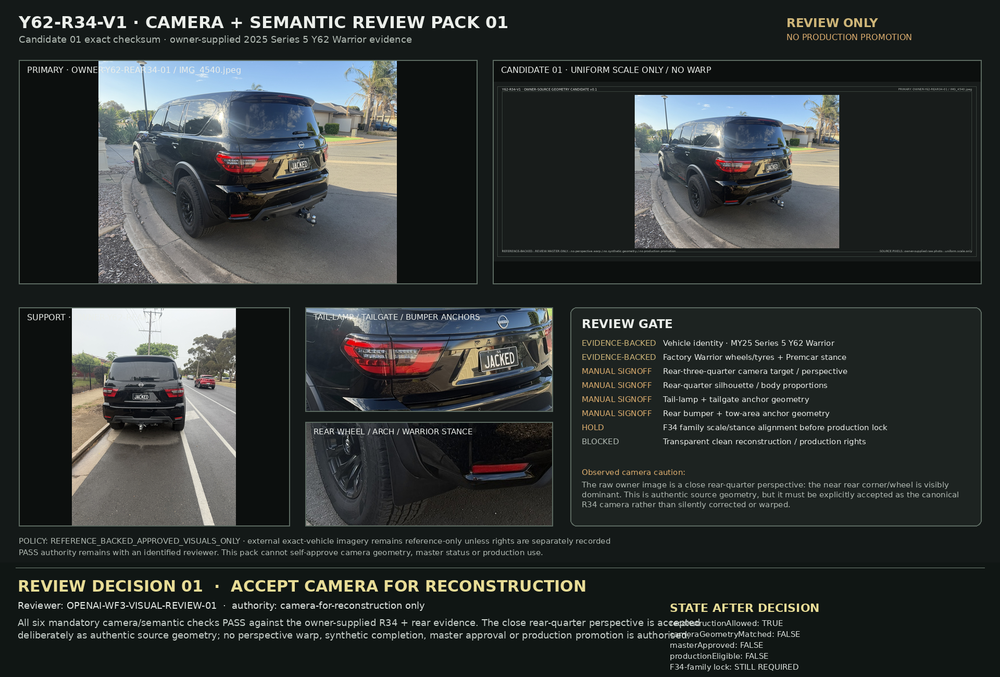
All six mandatory camera/semantic checks pass against the owner-supplied rear-three-quarter and straight-rear evidence. The close rear-quarter perspective is deliberately accepted as authentic source geometry; no perspective warp or synthetic completion is authorised.
cameraGeometryMatched remains false for production. Candidate 01 is still a background-preserving JPEG, not a transparent canonical master. This decision authorises a clean transparent reconstruction attempt only; F34-family alignment, exact-checksum review, production-binary rights, master approval and WF5 remain mandatory before customer use.
Candidate 05 promotion readiness · Y62-F34-V1-CANDIDATE05-PROMOTION-READINESS-01
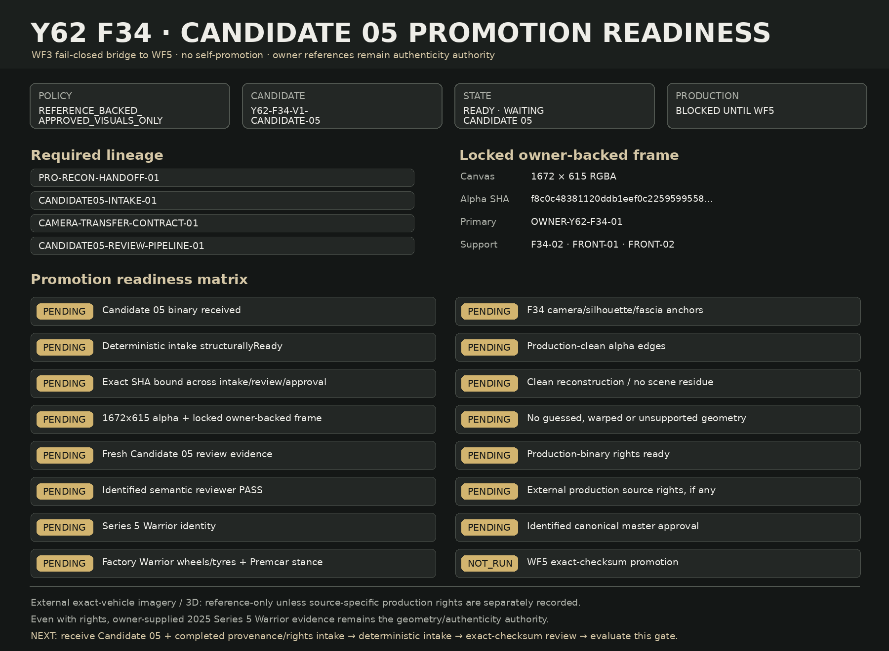
This fail-closed WF3 gate binds the future Candidate 05 checksum across intake, review, rights and identified canonical-master approval before it can be handed to WF5. It cannot set production eligibility or write the production registry itself.
Candidate 05 is still absent, so every binary-specific gate remains pending. External exact-vehicle images or 3D remain reference-only unless source-specific production rights are recorded, and rights never override the owner-supplied Series 5 Warrior pack as authenticity authority.
R34 Candidate 02 edge review · Y62-R34-V1-CANDIDATE02-EDGE-REVIEW-01 · RETURN
Reviewer: OPENAI-WF3-VISUAL-QA-02 · model-vision edge QA · return-only authority.
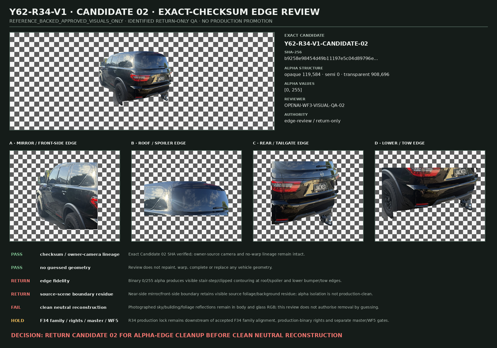
Candidate 02 is returned for alpha-edge cleanup. The exact checksum uses binary 0/255 alpha only, producing visible stair-step/clipped contouring at roof/spoiler and lower bumper/tow regions; source-scene boundary residue also remains near the mirror/front-side edge.
Owner-camera lineage and no-guessed-geometry remain PASS. Clean neutral reconstruction still FAILS because photographed environment reflections remain in body/glass RGB. No camera production lock, master approval or customer exposure is authorised.
R34 Candidate 03 edge review · Y62-R34-V1-CANDIDATE03-EDGE-REVIEW-01 · TARGETED RETURN
Reviewer: OPENAI-WF3-VISUAL-QA-03 · model-vision edge QA · return/alpha-cleanup authority only.
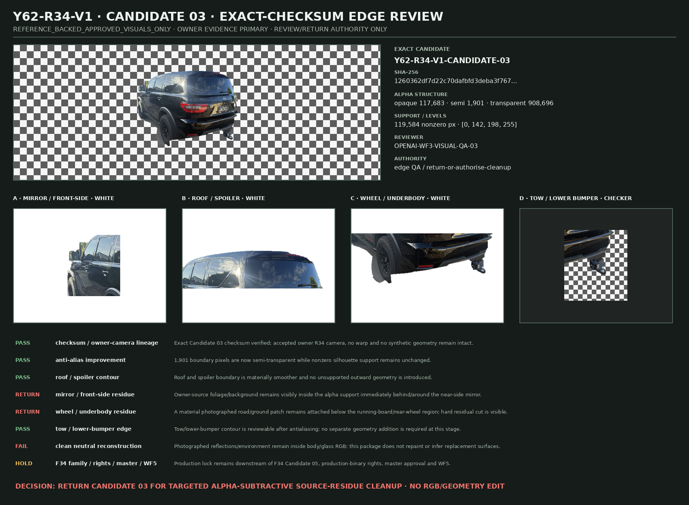
Candidate 03 materially improves the prior binary edge: 1,901 boundary pixels are semi-transparent, and the roof/spoiler plus tow/lower-bumper contour checks pass without outward support or guessed geometry.
The exact checksum is still returned because photographed foliage/background remains inside the alpha behind the near-side mirror and photographed road/ground remains attached below the running-board/rear-wheel region. Only targeted alpha-subtractive cleanup of those owner-evidenced residues is authorised.
No RGB retouch, perspective warp, synthetic geometry, master approval or production promotion is authorised. Clean neutral reconstruction still fails because photographed environment reflections remain in body/glass pixels.
Next WF3 dependency
The professional reconstruction handoff is ready. Receive Y62-F34-V1-CANDIDATE-05 with retoucher identity, method/provenance and a production-rights record. Then regenerate exact-checksum overlay and reviewer evidence before any master-approved or WF5 promotion path. SIDE remains source-blocked. R34 camera reconstruction is authorised from owner evidence, but production lock remains behind the accepted F34 family.